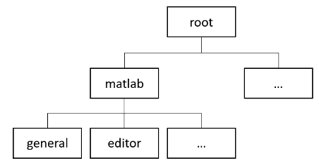

Create Custom Settings
You can create custom settings in MATLAB® to store and access your own data programmatically across sessions. For example, you can create a setting to store the location of an important folder on your system or to keep track of the number of times a file is run.
Add and Remove Settings Groups
Settings are organized into groups. For example, the
matlab.editor settings group contains settings related to the
MATLAB Editor. Settings groups are organized in a tree, with the root node at
the top.

Add Groups
To add new settings groups, use the addGroup function. For example, create the settings group
mysettings under the root node.
s = settings;
addGroup(s,"mysettings");
ss =
SettingsGroup with properties:
matlab: [1×1 SettingsGroup]
mysettings: [1×1 SettingsGroup]
mldrivetripwireaccess: [1×1 SettingsGroup]Hidden Groups
Hidden settings groups do not appear in the settings hierarchy but are
accessible programmatically. To create a hidden group, specify the
Hidden name-value argument as true.
For example, create the settings group myhiddensettings under
mysettings. Notice that
myhiddensettings does not display in
mysettings.
addGroup(s.mysettings,"myhiddensettings",Hidden=true);
s.mysettingsans = SettingsGroup 'mysettings' with no properties.
Remove Groups
To remove a settings group, use the removeGroup function. For example, remove
myhiddensettings.
removeGroup(s.mysettings,"myhiddensettings");Add and Remove Settings
Add Settings
To add a new setting, use the addSetting function. For example, add the setting
MyWorkAddress to the mysettings
settings group.
addSetting(s.mysettings,"MyWorkAddress");To set the setting value for the current session, specify a temporary value.
To set the setting value across multiple sessions, specify a personal value. For
example, specify a personal value for MyWorkAddress.
s.mysettings.MyWorkAddress.PersonalValue = "3 Apple Hill Drive";You then can use the setting value programmatically in your code.
fprintf("I work at %s.\n", s.mysettings.MyWorkAddress.ActiveValue)I work at 3 Apple Hill Drive.
Note
Adding settings directly to the root settings group is not supported.
Hidden and Read-Only Settings
Hidden settings do not appear in the settings hierarchy but are accessible
programmatically. To add a hidden setting, specify the Hidden
name-value argument as true. For example, add the hidden
setting MyHiddenWorkAddress to the
mysettings settings group and set its personal
value.
addSetting(s.mysettings,"MyHiddenWorkAddress",Hidden=true, ... PersonalValue="1 Lakeside Campus Drive");
To add read-only settings, use the ReadOnly name-value
argument and specify a personal value. For example, add the read-only setting
MyBirthDate to the mysettings settings
group and specify the personal value.
mydate = datetime("6/1/1990",InputFormat="MM/dd/uuuu"); addSetting(s.mysettings,"MyBirthDate",ReadOnly=true,PersonalValue=mydate);
Remove Settings
To remove a setting, use the removeSetting function. For example, remove the
MyBirthDate setting.
removeSetting(s.mysettings,"MyBirthDate");Validate Settings Using Functions
You can impose specific restrictions on settings values by specifying a validation function for a setting or group. A validation function accepts a potential setting value as an argument and throws an error if the value does not meet a specific requirement.
MATLAB defines several validation functions that you can use to validate settings.
Name | Meaning | Functions Called on Inputs |
|---|---|---|
| ||
| ||
| ||
| ||
| ||
| ||
|
| |
|
| |
| ||
| ||
| ||
| ||
| ||
| ||
| ||
|
| |
|
To specify a validation function when creating a setting, use the
ValidationFcn name-value argument and specify the function
handle. For example, add the setting MyLogicalSetting to the
mysettings settings group and specify that its value must be
a logical scalar.
addSetting(s.mysettings,"MyLogicalSetting",ValidationFcn=@matlab.settings.mustBeLogicalScalar);Try setting the value of MyLogicalSetting to a nonlogical
value. As expected, MATLAB throws an error.
s.mysettings.MyLogicalSetting.PersonalValue = 10;
Error setting 'MyLogicalSetting' in group 'mysettings': Value must be logical or convertible to logical.
You also can specify a validation function for an entire settings group. When
specified, the validation function validates the values of all settings within the
group that do not specify their own validation functions. For example, create the
settings group mylogicalsettings and specify the validation
function matlab.settings.mustBeLogicalScalar.
addGroup(s.mysettings,"mylogicalsettings",ValidationFcn=@matlab.settings.mustBeLogicalScalar);Create the setting MyLogicalSetting within the
mylogicalsettings group and try setting its value to a
nonlogical value. As expected, MATLAB throws an error.
addSetting(s.mysettings.mylogicalsettings,"MyLogicalSetting");
s.mysettings.mylogicalsettings.MyLogicalSetting.PersonalValue = 10;Error setting 'MyLogicalSetting' in group 'mysettings.mylogicalsettings': Value must be logical or convertible to logical.
Define Custom Validation Functions
You can create your own validation functions to check settings for characteristics that are not covered by the MATLAB validation functions. Validation functions are ordinary MATLAB functions that are designed for validating the values of settings. They must satisfy these conditions:
Accept the potential setting value as an input argument.
Have no output arguments.
Throw an error if the validation fails.
Place validation functions on the MATLAB path to make them available.
For example, create a function to validate whether the value of a setting is an even number.
function evenNumberValidationFcn(x) errorMsg = "Value must be an even number."; iseven = isnumeric(x) && mod(x,2) == 0; assert(iseven,errorMsg); end
Add this validation function to a new setting.
addSetting(s.mysettings,"MyEvenNumberSetting",ValidationFcn=@evenNumberValidationFcn);Set the value of MyEvenNumberSetting to an odd number. As
expected, MATLAB throws an error.
s.mysettings.MyEvenNumberSetting.PersonalValue = 1;
Unable to validate settings data. Error using assert Value must be an even number. ...
You also can create custom validation functions to make use of MATLAB validation functions that require multiple inputs, such as
mustBeGreaterThan, mustBeLessThan, mustBeGreaterThanOrEqual,
mustBeLessThanOrEqual, and
mustBeMember. For example, this
function validates that the value of a setting is one of four colors.
function colorValidationFcn(val) mustBeMember(val,["Black" "Blue" "Yellow" "Green"]); end
For more information about adding a validation function to a setting or
settings group, see addSetting and addGroup.
See Also
settings | addGroup | removeSetting | removeGroup | addSetting | hasGroup | hasSetting